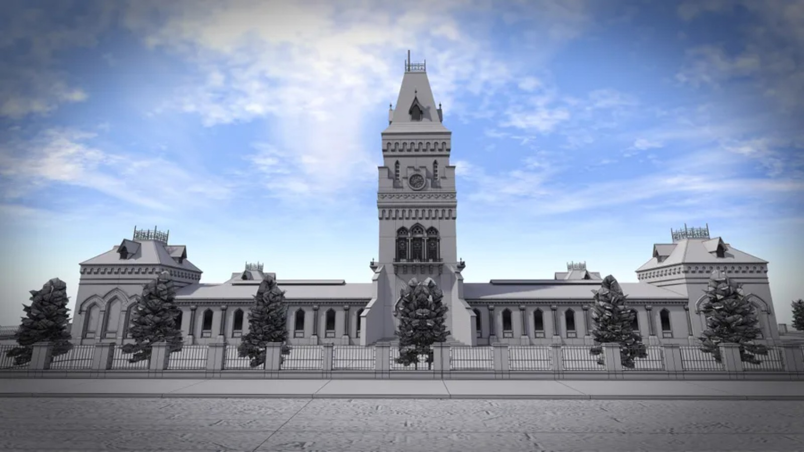
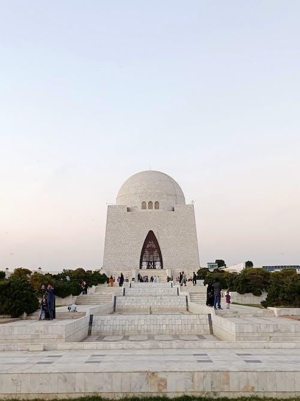

<body></body>  
<h1>KARACHI:</h1>
    <pre>

Karachi is the largest city in Pakistan and 12th largest in the world, with a population of over 20 million.
It is situated at the southern tip of the country along the Arabian Sea coast.
It is the former capital of Pakistan and capital of the province of Sindh
</pre>
<p>Famous places in karachi:</p>

<ul>
    

<li>Churnahurna Island and its water sports.</li> <br>
<li>Mohatta Palace.</li> <br>
<li>Quaid-e-Azam House Museum.</li><br>
<li>Turtle spotting at Turtle Beach.</li><br>
<li>Frere Hall.</li><br>
<li>PAF Museum.</li><br>
<li>The Chaukhandi Tombs.</li><br>
<li>Quaid's Mausoleum.</li>

    
</ul>
</pre> 
<table>
    <td></td>
<td></td>
</table> 

</body>  


